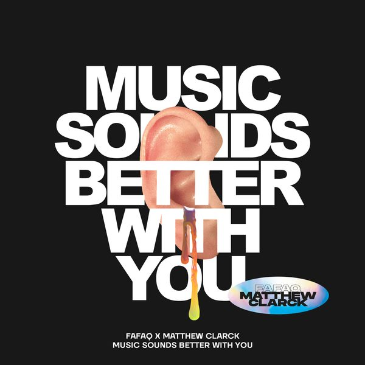

I 23 dischi
 1
I want youAlex Guesta
1
I want youAlex Guesta
 2
Tell it to my heart - Tiesto remixMeduza
2
Tell it to my heart - Tiesto remixMeduza
 3
In your arms for an angelTopic, Robin Schulz,Nico Santos,Paul van dyk
3
In your arms for an angelTopic, Robin Schulz,Nico Santos,Paul van dyk
 4
NightjarVintage Culture & Sonny Fodera
4
NightjarVintage Culture & Sonny Fodera

5 Music Sounds Better With YouFafaq & Matthew Clarck 6
Your DreamsLow Steppa
6
Your DreamsLow Steppa
 7
Take Me To The SunshineMatoma & SUPER-Hi feat. BullySongs
7
Take Me To The SunshineMatoma & SUPER-Hi feat. BullySongs
 8
London - PBH & JACK RemixMokita
8
London - PBH & JACK RemixMokita
 9
What I NeedJoel Corry x Lekota
9
What I NeedJoel Corry x Lekota
 10
Close Your EyesKSHMR x Tungevaag
10
Close Your EyesKSHMR x Tungevaag
 11
You & MeFaderX ft Norah B
11
You & MeFaderX ft Norah B
 12
Give inAlvin & STAR
12
Give inAlvin & STAR
 13
To give is to liveBufalo & Krooner
13
To give is to liveBufalo & Krooner
 14
Where did you goJax Jones feat mnek
14
Where did you goJax Jones feat mnek
 15
DownTujamo
15
DownTujamo
 16
In My ZoneTungevaag
16
In My ZoneTungevaag
 17
Just Wanna Be LovedYves V & Cat Dealers
18
You Gonna Want meKiras ft. Adam Clay
19
Vertigo - Milk Bar RemixWalter Taieb
17
Just Wanna Be LovedYves V & Cat Dealers
18
You Gonna Want meKiras ft. Adam Clay
19
Vertigo - Milk Bar RemixWalter Taieb
 20
El CantoTony Metric
20
El CantoTony Metric
 21
SpankSiwell & Vlada Asanin
21
SpankSiwell & Vlada Asanin
 22
Break ThroughBen Remember
22
Break ThroughBen Remember
 23
Move In My Direction68 Beats
23
Move In My Direction68 Beats
La tracklist
- 1 I want you Alex Guesta Under Town Records
- 2 Tell it to my heart - Tiesto remix Meduza Universal-Island Records
- 3 In your arms for an angel Topic, Robin Schulz,Nico Santos,Paul van dyk Intercord
- 4 Nightjar Vintage Culture & Sonny Fodera Defected Records
- 5 Music Sounds Better With You Fafaq & Matthew Clarck Bootleg
- 6 Your Dreams Low Steppa Armada Music
- 7 Take Me To The Sunshine Matoma & SUPER-Hi feat. BullySongs Armada Music
- 8 London - PBH & JACK Remix Mokita Armada Music
- 9 What I Need Joel Corry x Lekota SIGNAL >> SUPPLY
- 10 Close Your Eyes KSHMR x Tungevaag Dharma
- 11 You & Me FaderX ft Norah B CAOS Label
- 12 Give in Alvin & STAR Hexagon
- 13 To give is to live Bufalo & Krooner Hexagon
- 14 Where did you go Jax Jones feat mnek Polydor Records
- 15 Down Tujamo Spinnin' Records
- 16 In My Zone Tungevaag Spinnin' Records
- 17 Just Wanna Be Loved Yves V & Cat Dealers CONTROVERSIA
- 18 You Gonna Want me Kiras ft. Adam Clay Bootleg
- 19 Vertigo - Milk Bar Remix Walter Taieb WT Records
- 20 El Canto Tony Metric Cube Recordings
- 21 Spank Siwell & Vlada Asanin Tropica Records
- 22 Break Through Ben Remember Toolroom Records
- 23 Move In My Direction 68 Beats Juicy Music